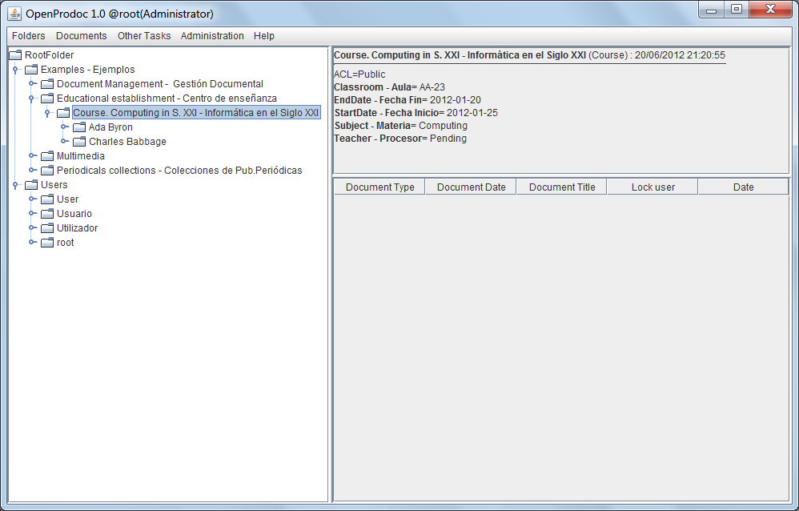
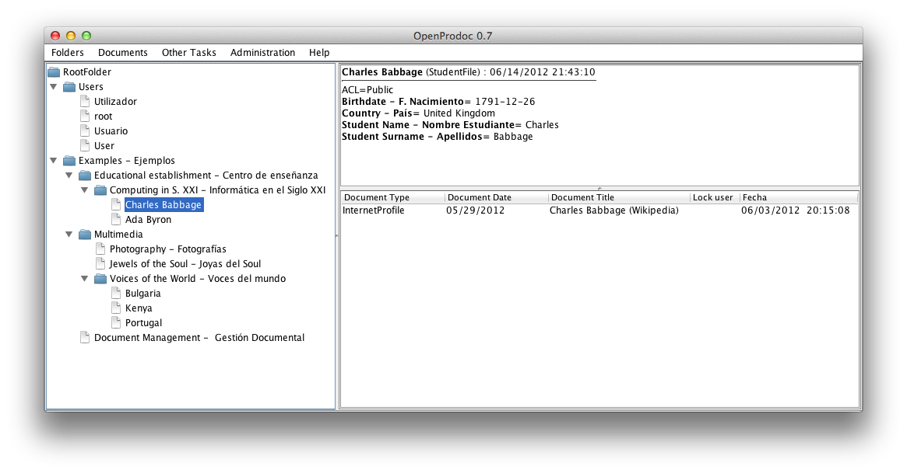
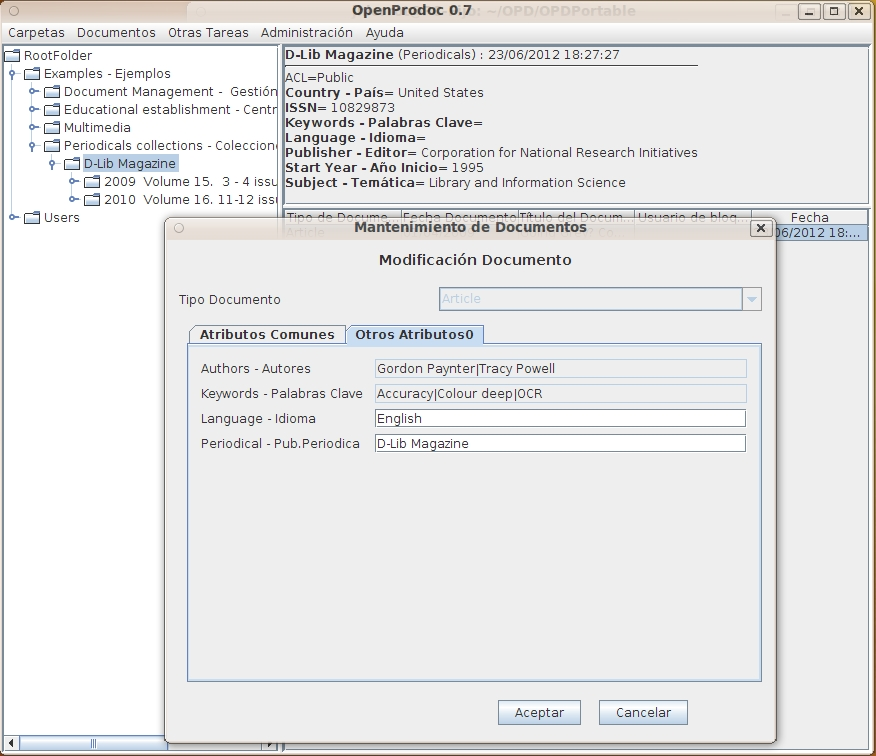

OpenProdoc
Specifications
Screenshots
F.A.Q.
Online Help
OpenProdoc in Internet
Roadmap
All Downloads / Install
Download Code as ZIP
View On GitHub
OpenProdoc: Document Management System
Castellano
OpenProdoc Screenshots:



 OpenProdoc: Document Management System Castellano
OpenProdoc: Document Management System Castellano 
 OpenProdoc: Document Management System Castellano
OpenProdoc: Document Management System Castellano